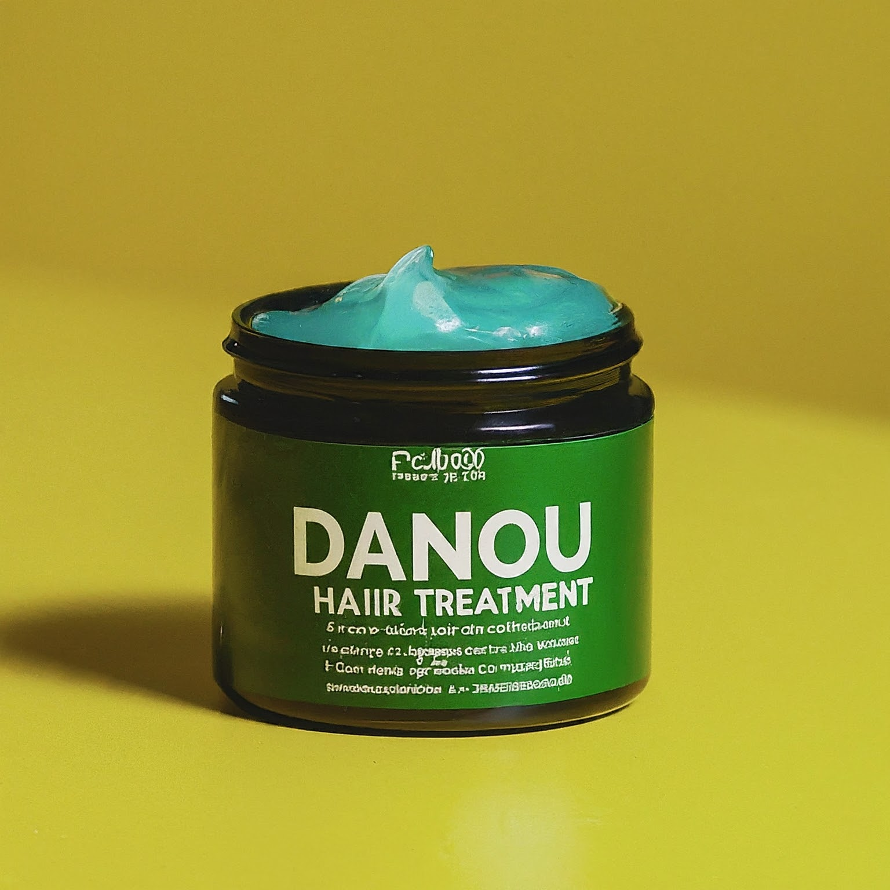

DanouCoiffure.com
Natural Hair Treatment Cream:
A natural product to nourish and add shine to your hair. It prevents breakage while improving the health and beauty of your hair by aiding in growth.
Directions for use: Apply a generous amount to the hair, from roots to ends, using a comb to distribute the product evenly. Do not rinse.
Danou Coiffure Pommade Traitement Naturel
It is designed to protect, strengthen dry, brittle, or damaged hair, it nourishes and restores the hair.
Ingredients: Almond oil, olive oil, avocado oil, coconut oil, cactus oil, and rosemary oil.
Elle est conçue pour protéger, renforcer les cheveux secs, cassants ou abîmés, elle nourrit et restaure les cheveux.
Ingrédients : L'huile d'amande, l'huile d'olive, l'huile d'avocat, l'huile de coco, l'huile de cactus et l'huile de romarin.